Selected Works
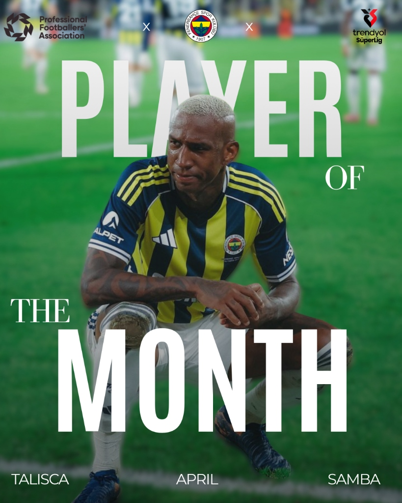
Talisca - POTM Concept
A Fenerbahçe-themed 'Player of the Month' (POTM) concept design created using Canva, featuring typography and layered visual editing.
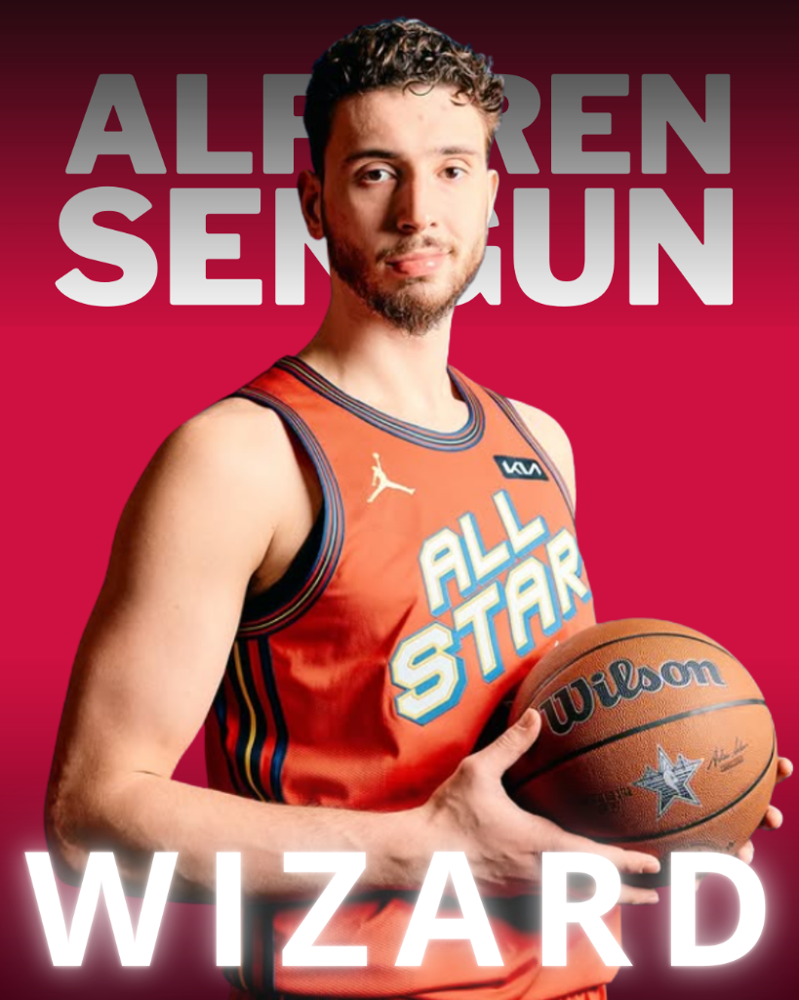
Alperen Şengün: The Wizard
A digital sports poster created for NBA star Alperen Şengün, highlighting a dynamic color palette and modern fonts.
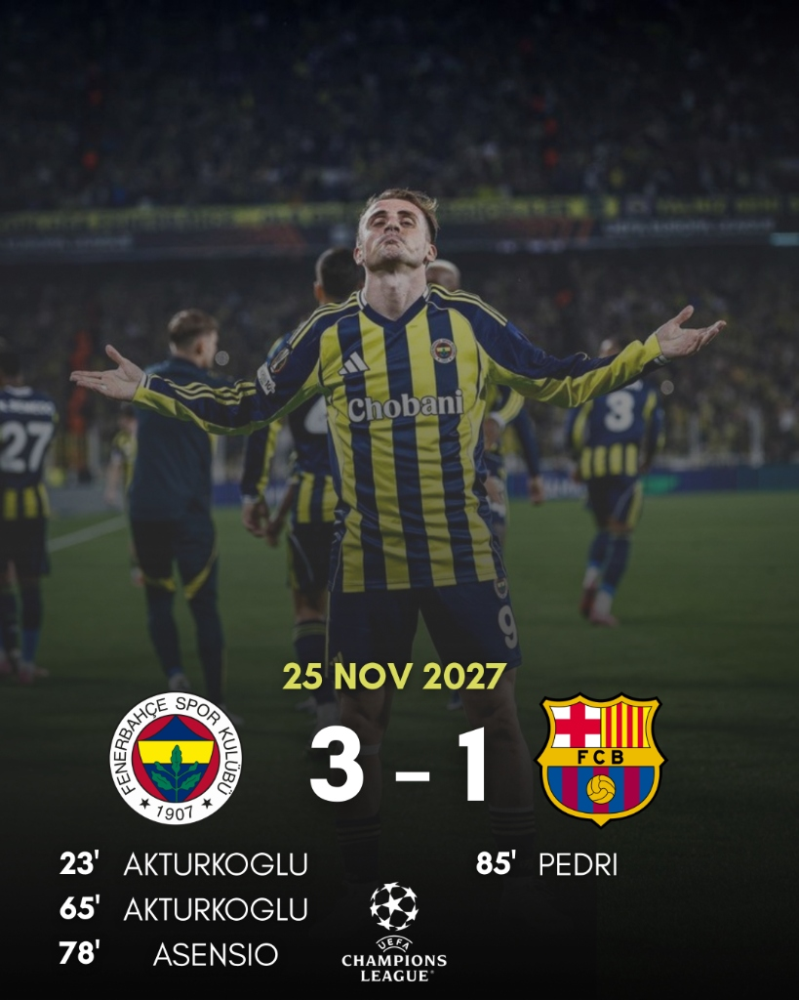
Match Day Visual (3-1)
A digital score infographic created for the Fenerbahçe - Barcelona match, supported by corporate logos and a clear visual hierarchy.
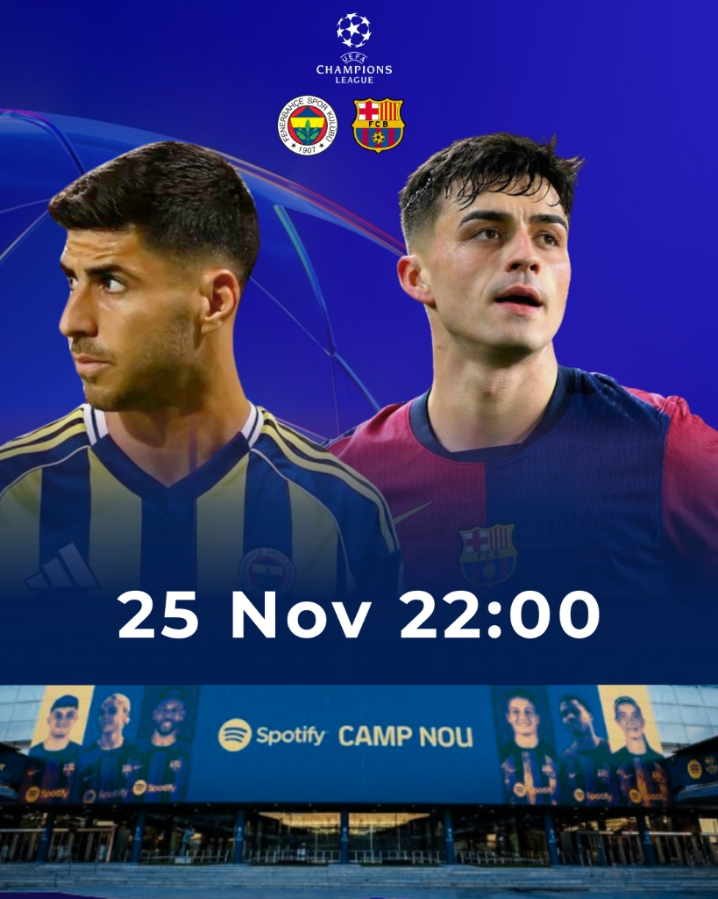
Champions League Matchday
A dynamic 'Matchday' design created for social media engagement, featuring visuals of Asensio and Pedri.
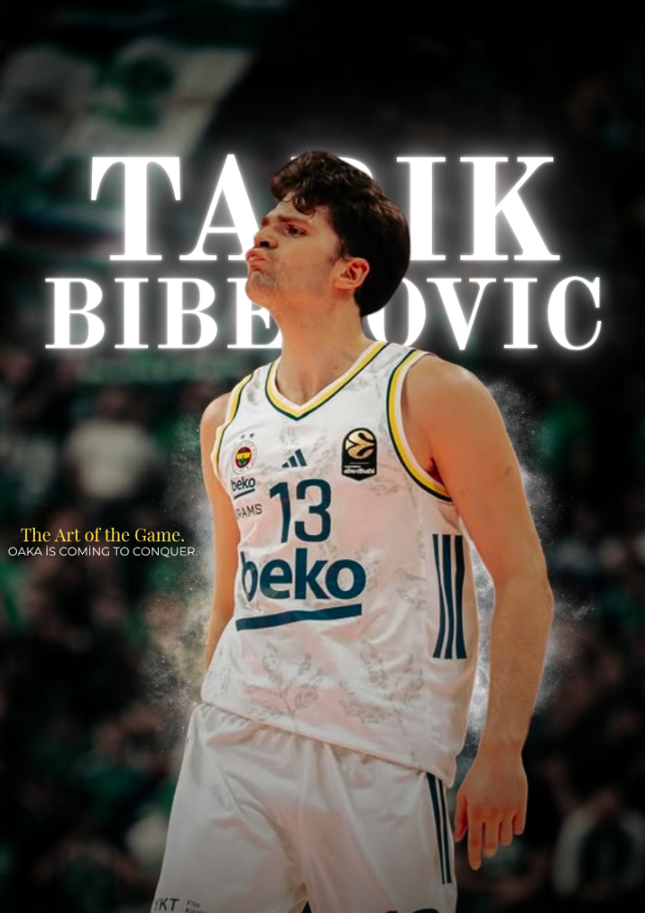
Tarık Biberović - EuroLeague Concept
A Fenerbahçe-themed EuroLeague concept poster highlighting Tarık Biberović, featuring dramatic typography, custom lighting effects, and a stylized motion blur background.
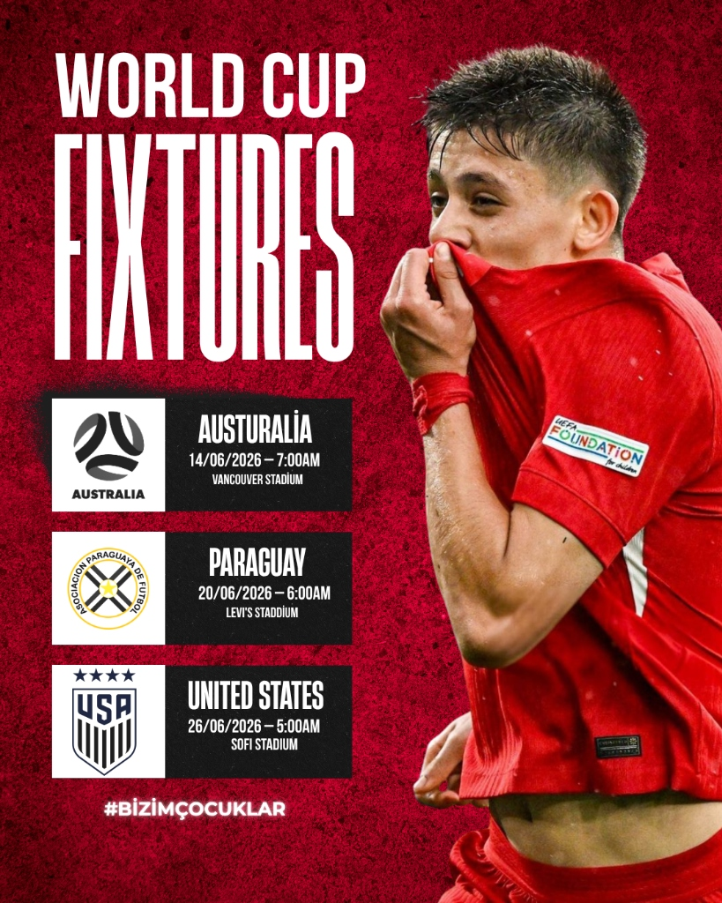
National Team Fixture Design
A dynamic World Cup schedule infographic designed for the Turkish National Football Team, utilizing a gritty textured red background, bold condensed typography, and official team branding.
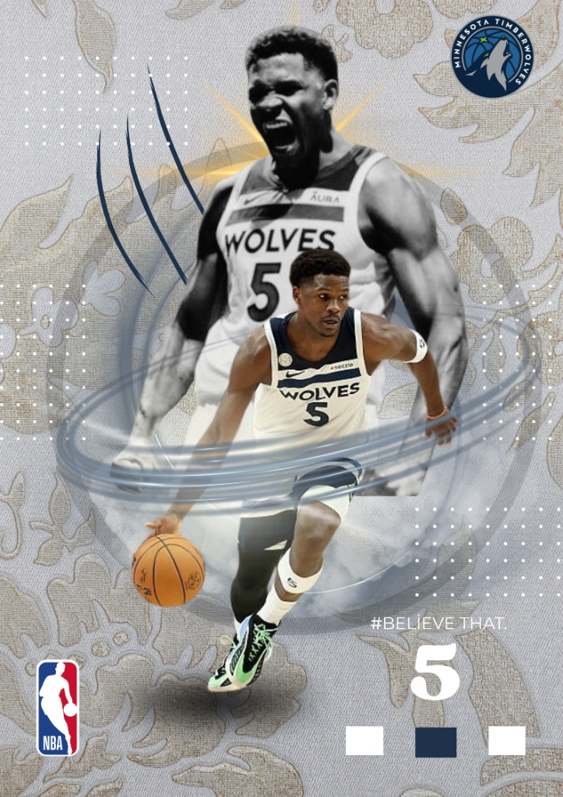
Anthony Edwards: Believe That
A sophisticated NBA sports poster featuring Anthony Edwards, combining dual-layered player imagery with a custom floral textured background, geometric grid elements, and a clean color palette.
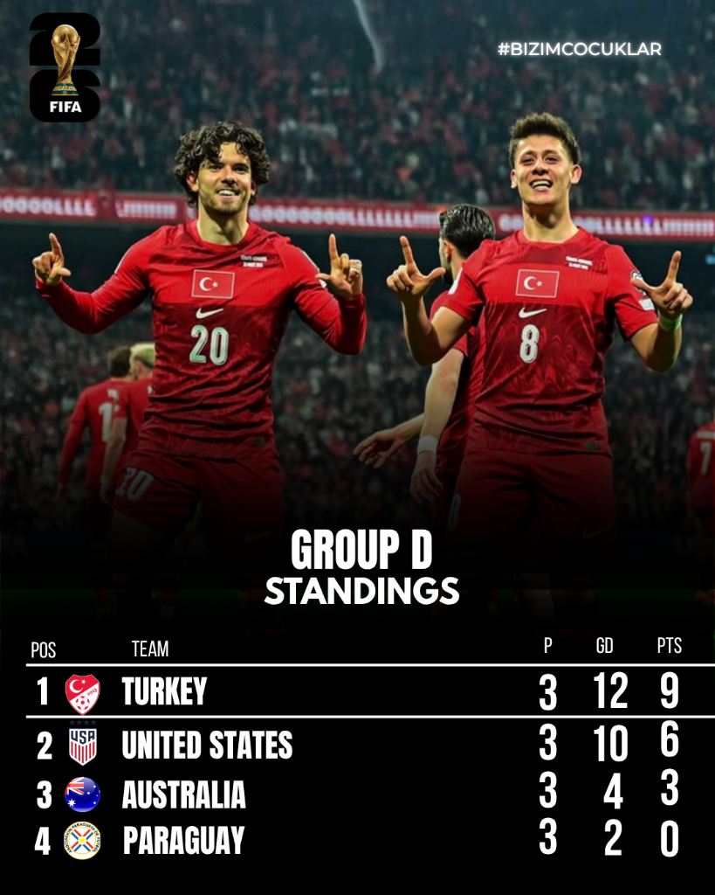
World Cup Group Standings
A clean and high-contrast sports infographic displaying the World Cup Group D standings, featuring celebrating national team players, integrated team crests, and an organized data hierarchy.
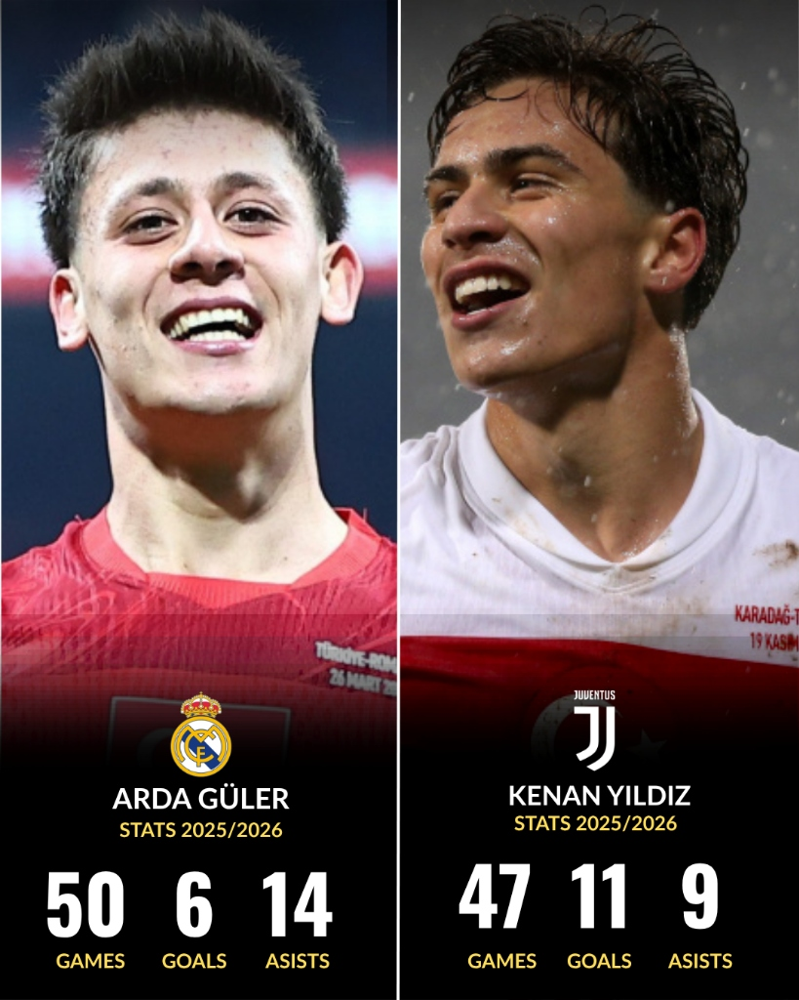
Arda Güler & Kenan Yıldız: Next-Gen Stats
A sleek, high-contrast player stats infographic highlighting the 2025/2026 season achievements of Turkish rising stars Arda Güler and Kenan Yıldız, with clean typography and club branding.
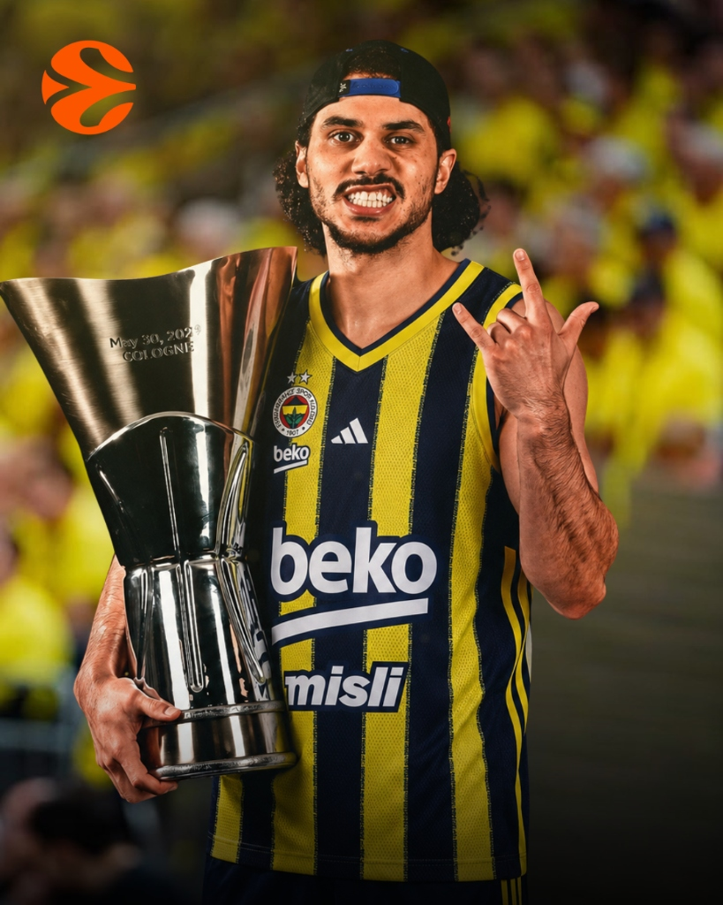
The Maestro of Istanbul: A New Reign
This special digital composition celebrates the historic transfer of Shane Larkin, one of the biggest stars in European basketball, to Fenerbahçe Beko. The visual brings together two different iconic moments of Larkin, serving as both a matchday poster and a transfer announcement.
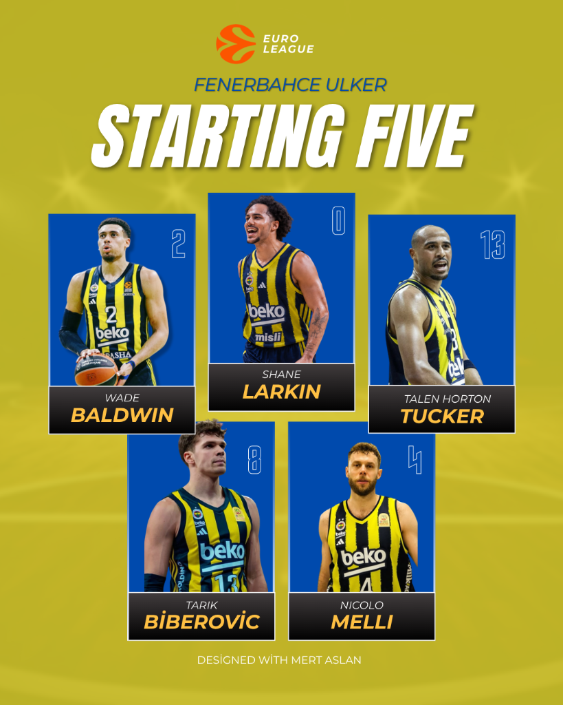
The Elite Five: EuroLeague Starting Lineup
A corporate and modern social media infographic introducing Fenerbahçe Beko's powerful starting five lineup (Wade Baldwin, Shane Larkin, Talen Horton-Tucker, Tarık Biberovic, Nicolo Melli) designed for the EuroLeague arena. In the design, player portraits are placed within vibrant blue color blocks to create contrast against a dynamic yellow background reflecting the club's identity.
About Me
I am Muhammet Mert Aslan.
I am 20 years old and a New Media student at Üsküdar University. With my interest in the design world, I focus on developing creative solutions using digital media tools. I continue to improve myself in this field by blending my academic education with practical design projects.